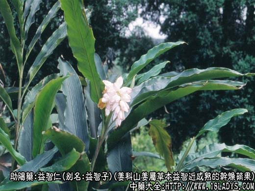
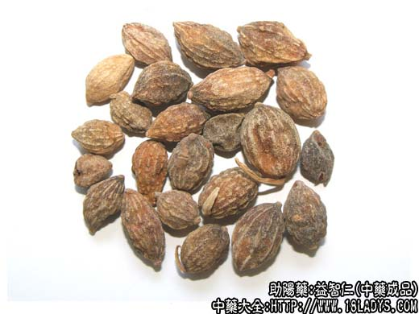
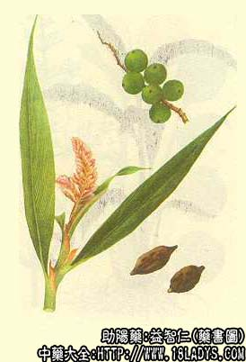

益智仁为常用中药。始载《开宝本草》。
别名：益智子。
来源：为姜科山姜属多年生草本植物益智近成熟的干燥蒴果。栽培及野生均有。
产地：主产于广东海南岛，此外湛江地区亦有生产。
性状鉴别：益智仁呈纺锤形或椭圆形，长1.2~2厘米，直径1~1.3厘米。表面棕色或暗棕色，有由纤维束形成的断续纵棱线13~20条，顶端有微凸起的圆点花柱残痕，下端有国柄痕或带有一段短柄，果皮韧性，不易破裂。子房三室，中轴胎座，每室有种子6~11粒，粘连于一起，呈2~3行纵向排列在胎座上。种子略扁，呈不规则的多角形，长宽约3毫米，厚约2毫米，暗棕色，破开后断面白色。气微香，味微辛苦。
以颗粒大，种仁饱满者为佳。
主要成分：含挥发油，主要为萜烯、倍半萜烯。
功效与作用：补脾暖肾、缩小便，其作用为健胃、抗利尿。减少唾液分泌。
炮制：盐水炒，配方时捣碎。
性味：辛、温。
归经：入心、脾、肾经。
功能：温中，暖肾，缩小便，止泄泻，摄唾诞。
主治：胃腹冷痛，中寒吐泻，遗精崩漏，遗尿尿频，多唾液等症。
临床应用：1、治脾肾虚寒所致的泄泻、遗尿、小便频数，常配其他补肾和固涩药，如菟丝子、桑螵蛸、乌药、山药等，方如缩泉丸加味。
2、治脾胃虚寒所致的腹部冷痛、呕吐、泄泻、食欲不振、唾液分泌增多，常配入陈夏益气汤或理中汤内。
附：1、与补骨脂比较：两者能治脾肾虚寒所致的遗尿、泄泻，但益智仁侧重补脾，故健胃、止呕、止腹痛之力较强；补骨脂侧重补肾，治腰膝冷痛、阳痿之力较胜。
2、与佩兰比较：两者都能治涎沫增多，口中粘腻不爽，但益智仁治寒证，佩兰治湿热证。
3、服益智仁防其动火时，可与淮山药配伍。
4、用作健胃，益智仁可代砂仁。
用量：3~9g。
处方举例：缩泉丸加味：益智仁、乌药、淮山药、菟丝子、桑螵蛸，各等份，研末捣糊为丸，每服6g，每日1~2次。